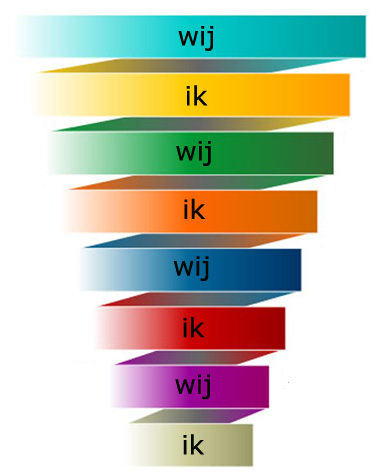

Семь уровней лидерства
Живой тренинг + онлайн участие. Москва
Суть Спиральной Динамики за 3 минуты | Зачем нужна Спиральная Динамика?
Как управлять людьми через их сознание и вдохновение?
В течение 30 лет Клэр Грэйвз исследовал более 50.000 человек и обнаружил, что все люди в ходе своего разития проходят один и тот же маршрут.

Этот "маршрут" состоит из единых 8 этапов - 8 уровней мышления. И каждому уровню соответствуют свои ценности, свои мотивы... и свое конкретное поведение, предсказуемое с точностью до реакции.
Иначе говоря, если Вы знаете на каком уровне мышления находится человек, Вы знаете про него все: как он мыслит, ради чего живет, какие глубинные страхи и желания его волнуют, и как он поступит в том или ином случае. И можете управлять им через его сознание и вдохновение.
Однако, не все так просто. 8 уровней сознания, это не 8 типов людей. Это 8 витков глобальной Спирали развития сознания. Каждый уровень (виток) включает в себя все предыдущие. И, соответственно, с него видны и понятны все внутренние витки (пройденные уровни). И просто непонятные внешние (так как их еще не было в опыте человека).
Поэтому каждому человеку доступно понимание мотивов и управление людьми только освоенных им уровней. А будущие же уровни (еще не созревшие у этого человека) видятся как тайна или хаос. Люди, находящиеся на этих уровнях мышления, кажутся гениями или великими мистиками, способными управлять нами через разум. Или лидерами, чей полет мысли выглядит великим и непостижимым. Теми, кто создает мир, в котором мы живем.
Из 8 уровней мышления лидерство возможно на 7. Но каждый Лидер получает среду соответствующую своему лидерскому сознанию. К нему притягиваются те люди, которым интересны его цели. А его цели определяются контекстом его жизни и текущими в нем задачами. У диких племен и банд головорезов тоже есть свои Лидеры ;) Но масштаб их влияния ограничен.
Как стать Лидером следующего порядка?
Повторюсь, открытие Клэра Грэйвза было в том, что "маршурт" развития у всех людей един. Поэтому мы можем увидеть, какие уровни нас ждут, даже если находимся на предыдущих.
Это связано с тем, что каждый следующий уровень четко предопределен глобальными жизненными задачами, с которыми сталкивается человек, выходя на него. И встреча с ними формирует в человеке новое мышление. Решение этих задач проявляет в человеке новые ценности и развивает новые стратегии мышления. Так происходит "созревание" лидера до следующего уровня, возможности которого каждый раз поражают воображение. И ты чувствуешь себя словно прозрел после долгих лет блуждания на ощупь.
Какие возможности дает Лидерам открытие Клэра Грэйвза?
- Видеть людей насквозь и знать, чего от них ожидать, задав всего пару вопросов. А иногда и просто услышав его речь.
- Предсказывать решения людей и их действия прежде, чем они сами понимают, как поступят. Потому что шаблоны их мышления известны и очевидны.
- Вдохновлять, создавая глубинную мотивацию. Потому что их ценности и глубинные мотивы известны.
- Понимать какие задачи способен и какие не способен решить этот человек, видеть его потенциал. А также знать, как он будет себя вести в кризисной ситуации.
Все это дает возможность создавать команды, которые будут создавать рtзультаты, превосходящие ожидания. Управлять массовым сознанием. А на более высоких уровнях - строить открытые системы, которые будут расти и развиваться сами.
Что могут Лидеры высших уровней?
Вопросов "возможно ли это?" и "как это создать?" уже не стоит. Главный вопрос, который тебя ведет: "Что еще более интересное можно создать?" Масштаб и принципиально новое - вот что увлекает по-настоящему. И каждый твой шаг - это реализация себя в творении жизни.
Ты видишь мир как живую систему естественных потоков. Вероятностные линии будущего разворачиваются в твоем сознании в веер возможностей. Горизонт событий, за который ты можешь заглянуть измереяется десятилетиями. А границы твоего разума включают в себя сознание всех людей, которые тебе известны.
Остается только выбирать ту Игру Жизни, которая тебя увлекает сейчас. У каждого Лидера она своя. И в сочетании эти игры создают тот калейдоскоп событий, который в тонком срезе сегодняшнего дня воспринимается всеми как "сложившаяся реальность". Одни живут в этом мире, другие - создают его.
И ты понимаешь, что в любой момент можешь выбрать любую из этих позиций.
Самый мощный инструмент управления сознанием
Естественный путь развития и постановки перед собой все более и более масштабных задач уже развивает каждого из нас. Однако, этот путь не дает четкого видения вертикали развития. Масштабирование задач может быть горизонтальным (а не объемным), и, как следствие уводить наш рост в сторону.
Модель, которую создал Клэр Грэйвз, получила название "Спиральная динамика", потому что показывает развитие в объеме и в движении. Это самое точная и многомерная из существующий моделей развития (насколько вообще модель может быть точной для описания эволюции). Ее теоретическую часть можно изучить с помоощью одноименной книги, написанной прямыми последователями Грэйвза - Доном Беком и Крисом Кованом (мне посчастливилось учиться лично у них обоих).
Однако, как показал мой опыт, даже двух лет переложения этого знания на практику было недостаточно, чтобы овладеть этой моделью как инструментом. На выявление "ключей", которые превратили теорию в технологию, мне понадобилось почти 6 лет моделирования и тестирования результатов на практике. Но стоит отметить, что даже само знание Спиральной динамики, как модели уже начинает значительно менять твою жизнь по части окружения.
Как только ты начинаешь понимать, на каком уровне находишься ты сам, и на каком другие люди - ты видишь, кто тебя тормозит своим мышлением, а кто двигает тебя вверх. К чьим идеям стоит прислушаться, а чьи, как бы привлекательно они не звучали, с точки зрения эволюции являются вчерашним днем. Что создает рост, а что рано или поздно приведет к кризису. А главное , твои собственные задачи четко сортируются на две категории. Те, которые нужно научиться решать обязательно, потому что это путь в будущее, даже если сейчас все считают их бессмыслицей или безумием. И те, которые уже не актульны, как бы ни поддерживало их большинство (ведь большинство всегда на уровень ниже).
Как еще может применяться Спиральная динамика?
Самый очевидный способ применения - это использование ее «ключей» в управлении и маркетинге крупных рекламных компаний с нечеткой целевой аудиторией (когда мы знаем ценности, глубинные желания и глубинные страхи аудитории, как она мыслит и какие формулировки звучат в ее «внутреннем голосе», мы говорим на «языке ее мозга»).
Однако, самый эффективный способ использования Спиральной динамики, это применение ее, как инструмента развития. Лидерство возможно на семи ее уровнях из восьми. Каждый из лидеров уже находится на каком-то уровне. Но выход всего на один уровень вверх открывает Вам сознание совершенно иных людей, и на порядки расширяет ваши возможности в современном мире.
Как выйти на следующий уровень Лидерства уже сейчас?
За 6 лет практики применения Спиральной динамики в маркетинге и управлении (как в бизнесе, так и в личных сферах) я вычленил простые ключи, которые сделали ее более инструментальной. Последние 4 года я обучал им на тренингах и активно использовал в коучинге. И сейчас я понимаю, что просто дать "ключи" Спиральной динамики, чтобы Вы могли использовать ее как простой и функциональный инструмент - мало. Без личного опыта "чувствования" каждого уровня Спиральной динамики Вы получите лишь 5-10% от всего потенциала этой модели. И, главное, знание ключей (в отличии от чувствования уровней) не создаст того роста, который Вы можете получить от Спиральной динамики. Да и сами "ключи", понятное дело, будут работать не так эффективно, как если бы за знанием каждого из них у вас уже стоял конкретный опыт.
Поэтому я решил создать не только инструментальный, но и трансформационный тренинг. Тренинг, который даст Вам возможность за 2 дня пройти через эти уровни, осознавая каждый из них, и пережить их так, как в жизни. Тренинг, главная задача которого - расширить сознание до мышления следующего порядка.
В основе этого тренинга лежит модель Спиральной динамики. Но технически и инструментально он наполнен самыми эффективными техниками НЛП и практической психологии, которые выведут Вас на новый уровень лидерства и управления. Не только Вашими людьми, но и массовым сознанием.
Программа тренинга
Тренинг состоит из трех блоков, которые идут параллельно.
Основная программа тренинга
Лидерский рост и трансформация
В первую очередь Вы познакомитесь со Спиральной Динамикой, как моделью и как инструментом. И тут же попробуете ее на практике в мини-группах. Но дальше начнется самое интересное: в формате коучинга Вы сможете приложить Спиральную Динамику к конкретным ситуациям своей собственной жизни... И, взглянув через нее, как через фильтр, обнаружите истинные причины того, что происходит. Те вещи, которые либо не замечали, либо не принимали всерьез прежде. Увидите весь масштаб происходящего, для Вас станет ясно, что необходимо сделать или изменить, чтобы выйти на следующий уровень.
Инструменты создания команды и управления
Вы узнаете, как с помощью Спиральной Динамики выбирать лучших лидеров для своих команд, кого на какие роли ставить, чтобы они успешно справлялись с ними, и как еще на этапе знакомства вычислить тех людей, которых лучше вообще не брать в свою команду.
Кроме того, Вас ждет несколько ролевых игр, в которых Вы сможете обнаружить собственные поведенческие паттерны* в командной игре. Понять какие Ваши стратегии успешны, а какие Ваши стратегии топят Вас или мешают Вам двигаться вперед. Вы сможете взглянуть на себя со стороны и обнаружить то, что обычно не замечали. Зная это, Вам станет ясно что Вам нужно сделать или изменить, чтобы стать Лидером нового уровня.
Управление людьми в бизнесе и личном общении
Вы узнаете как используя Спиральную Динамику, управлять людьми через их мышление и вдохновение, как понимать ход их мыслей, и как видеть те глубинные ценности, которые ими движут. Как объяснять им сложные вещи на "их языке", как мотивировть и вдохновлять их, и как формулировать для них задачи, чтобы они гарантированно были выполнены.
А так же Вы узнаете:
- Почему лидером может стать каждый, но мало кто может им быть?
- В чем заключается "предназначение" (реализация) лидера на каждой ступени?
- Каких людей лидер каждой ступени может повести за собой легко, и кто за ним не пойдет?
- Семь самых больших ошибок лидера, которые тормозят его рост, и как их не совершить.
- Как управлять людьми, как их мотивировать и вдохновлять в зависимости от их ступени развития?
- Какие задачи ждут Вас на следующей ступени роста и каких навыков и качеств они от Вас потребуют?
- Что сделать, чтобы перейти на следующий уровень как можно скорее?
Мастер-блок
Мышление второго порядка. Как выйти на 7-й и 8-й уровни Лидерства.
Этот день тренинга будет посвящен техникам 7-го уровня Спиральной динамики, и тому, что ведет нас к 8-му уровню. На этот раз я познакомлю Вас с принципами системного мышления, Теорией Ограничения Систем Голдратта, и квантовой природой сознания.
Возможно, для кого-то это будет сложно, и местами будет не совсем ясно, как это применять (или совсем не ясно). Но если Вы знаете, что "нет ничего более практичного, чем хорошая теория", понимаете для чего нужно картирование, и привыкли работать мозгами на высоком системном уровне - этот день будет для Вас самым интересным.
P.S. Этот тренинг будет значительно отличаться от предыдущего, хотя и будет построен вокруг той же модели.
В результате прохождения этого тренинга:
Отзывы участников этого тренинга
Отзывы о прошлом тренинге "Семь уровней лидерства" Мнение специалиста о тренинге "7 уровней лидерства"
В каком случае не стоит проходить этот тренинг
Если Вы не готовы к серьезным изменения в себе и в своей жизни.
Если Вы боитесь открыто посмотреть на те вещи внутри себя, которые Вас пугают или кажутся Вам неприятными.
Если Вы не принимаете себя таким, какой Вы есть, и чужая оценка является для Вас определяющей.
Или если Вы не готовы пройти через все это и стать по-настоящему сильным и свободным человеком, в первую очередь от своих внутренних ограничений.
Сразу скажу, что Лидерский рост - это непростая задача. Потому что Вам откроются ключи к сознанию многих. И поэтому нужно быть готовым к серьезным изменениям, какими бы заманчивыми Вам ни казались перспективы.
Форматы участия
- Живое участие в зале (рекомедуется)
- Онлайн участие - видеотрансляция, вопросы и общение с группой через чат, выполнение упражнений с другими онлайн участниками в скайпе
- Видеозапись тренинга - если по времени не можете присутствовать в зале или онлайн (определенные дни или полностью), то мы вышлем вам видеозапись пропущенных дней в течение 1-2 недель после окончания тренинга
Стоимость участия
Живой тренинг прошел, доступна запись
Основная программа: 25 000 руб.
Основная программа + мастер-блок: 50 000 руб.
Гарантии
Если Вам не понравится тренинг по любой причине, мы вернем Вам деньги по первой же Вашей просьбе. Всего лишь сообщите нам об этом до окончания тренинга. Мы абсолютно уверены в качестве этого тренинга, поэтому смело даем Вам такую гарантию.
Зарегистрируйтесь в ранний список, чтобы получить самое выгодное предложение на этот тренинг: